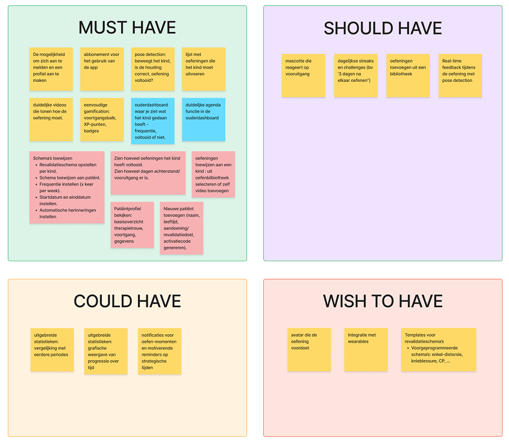
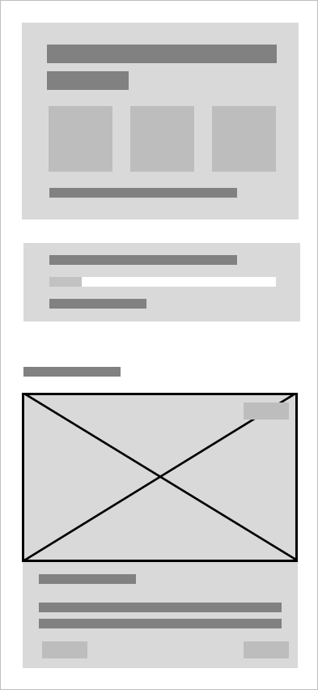
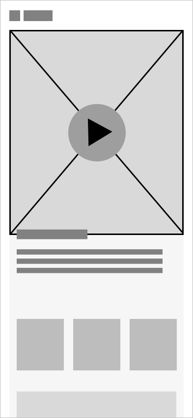
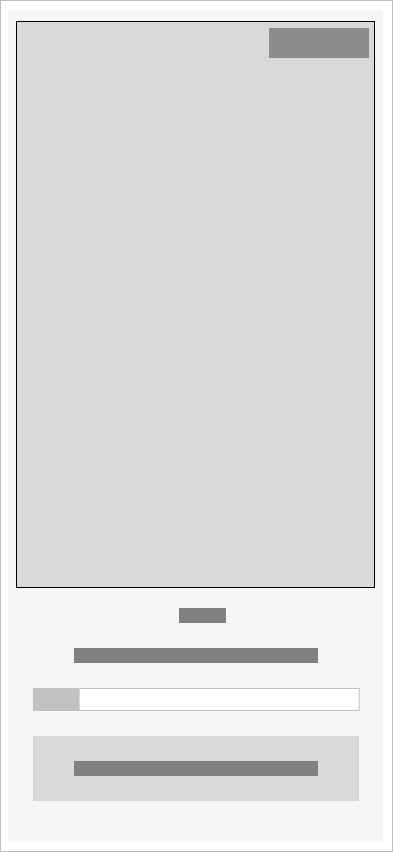
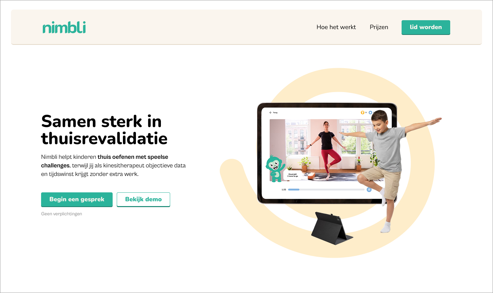
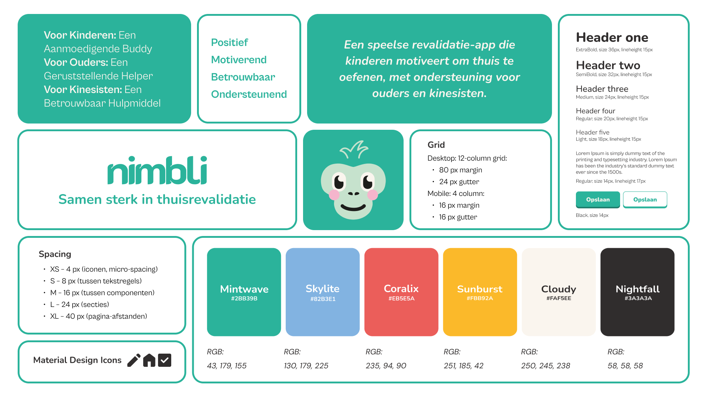
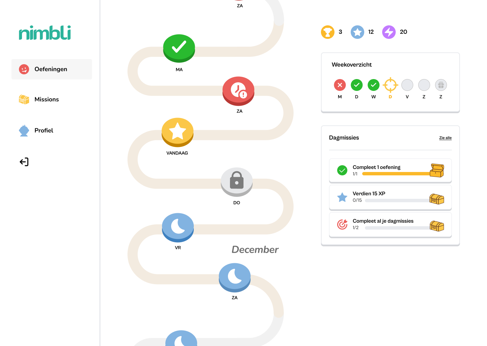
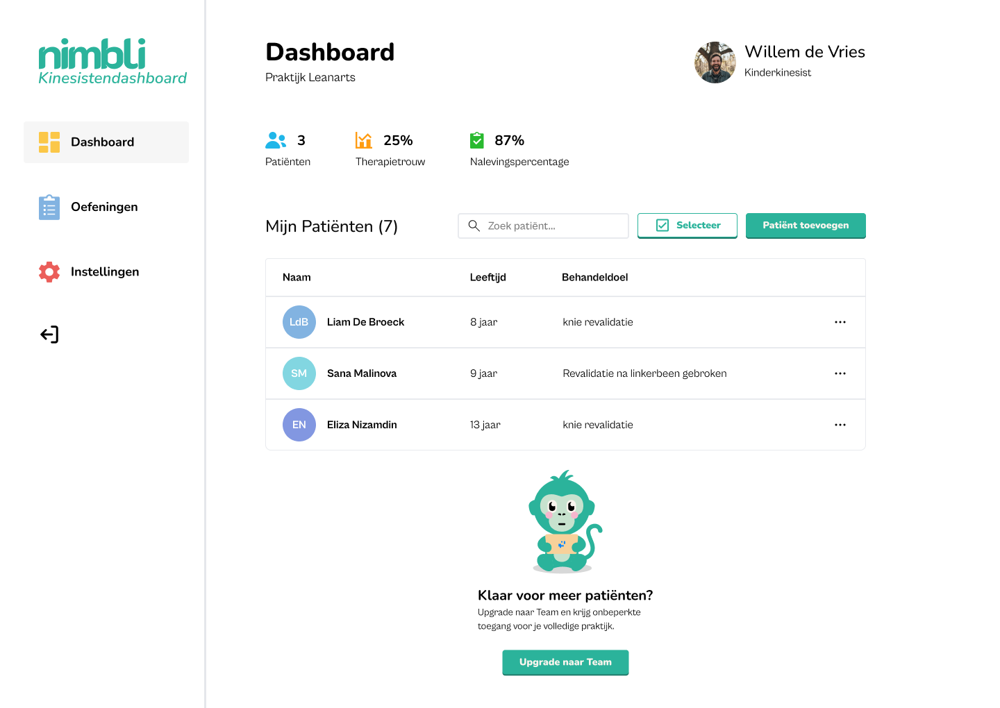

Nimbli
Gamification in home rehabilitation that helps kids keep exercising, supports parents, and gives kinesitherapists a clear overview.
Nimbli explores how gamification can make home rehabilitation more motivating for children. The project responds to a clear gap between what is clinically prescribed and what families can realistically keep up at home: children lose motivation quickly, parents are unsure how to support them, and kinesitherapists have limited visibility between sessions.
The research phase combined desk research, expert interviews and journey maps to map the problem from three sides: the child, the parent and the kinesitherapist. That process consistently showed the same pattern: routines fade after a few days, feedback is missing, and the people involved do not have enough structure to keep the exercises going. The intro boards in Figma capture that foundation in a compact overview.
The primary audience is parents of children aged 6 to 12 who need support with daily home exercises. The child remains the end user, but the parent is the daily gatekeeper: they remind, guide and motivate. Kinesitherapists are the professional users who set up and follow the exercise plan. That makes Nimbli a B2B product with a family-facing experience.




The concept uses gamification to make the routine feel less like a duty and more like a small daily challenge. Children get visible progress, badges and feedback; parents get clarity and reassurance; therapists get a lightweight way to track adherence and adjust the programme without extra admin. The wireflow and mid-fi screens translate that logic into a clear structure.
The marketing website translates the project into a clear external story for parents, kinesitherapists and stakeholders. This part of the process shows the product in a more public-facing format.


The branding strategy gave the project its tone, visuals and message. It connects the clinical problem with a calmer, more playful identity that still feels trustworthy.
In short, Nimbli is a concept that turns home rehabilitation into a more guided and motivating experience, while still respecting the realities of families and the time constraints of kinesitherapists. The design challenge was to keep it playful for children, clear for parents and useful for professionals.
The final outcome is not only an app concept, but a complete ecosystem: research, brand direction, marketing website and a design system that keeps the product coherent across all touchpoints.


Back to projects overview
Back
Next
Zuiderbad